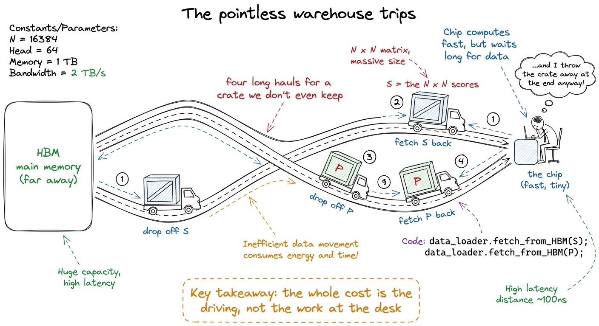
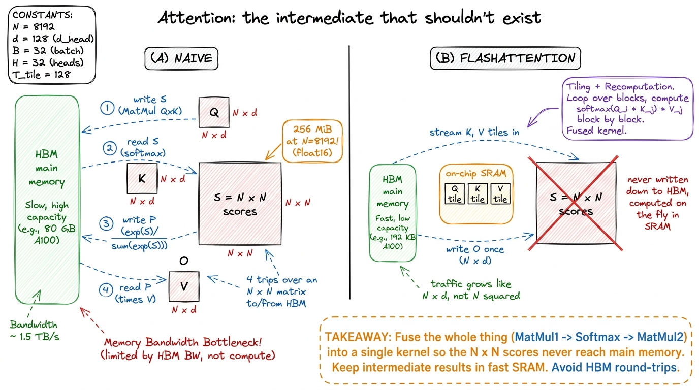
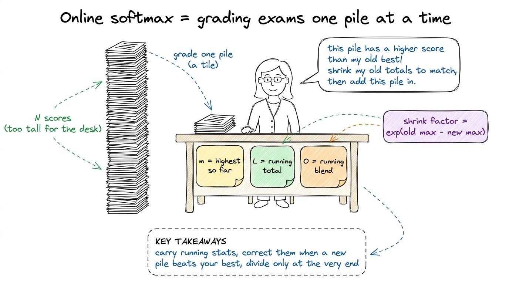
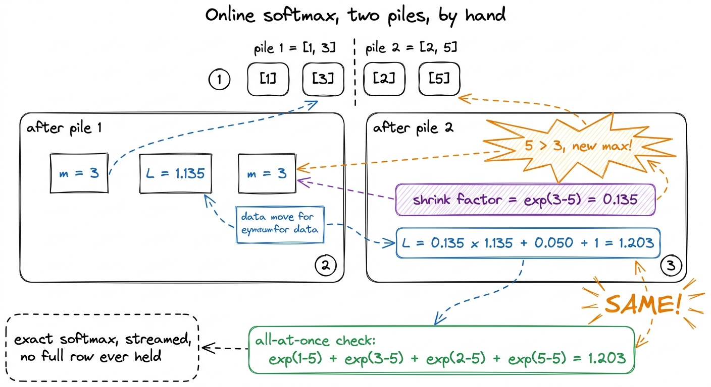
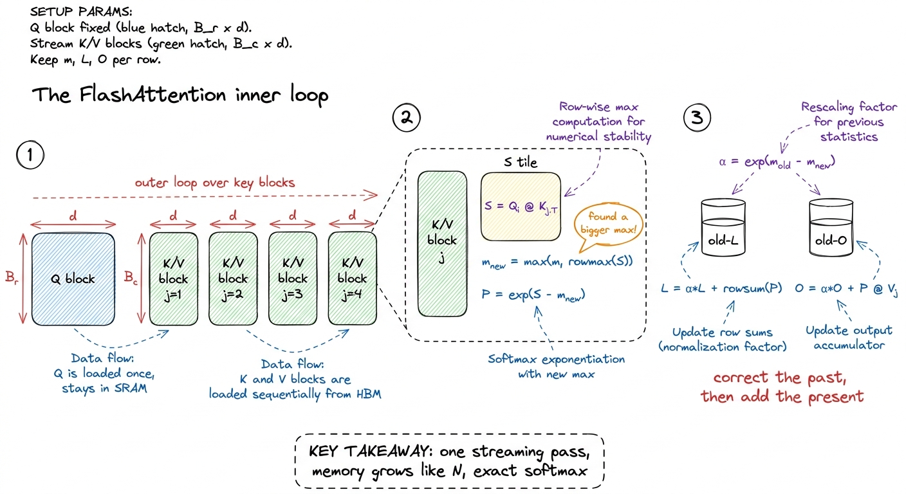
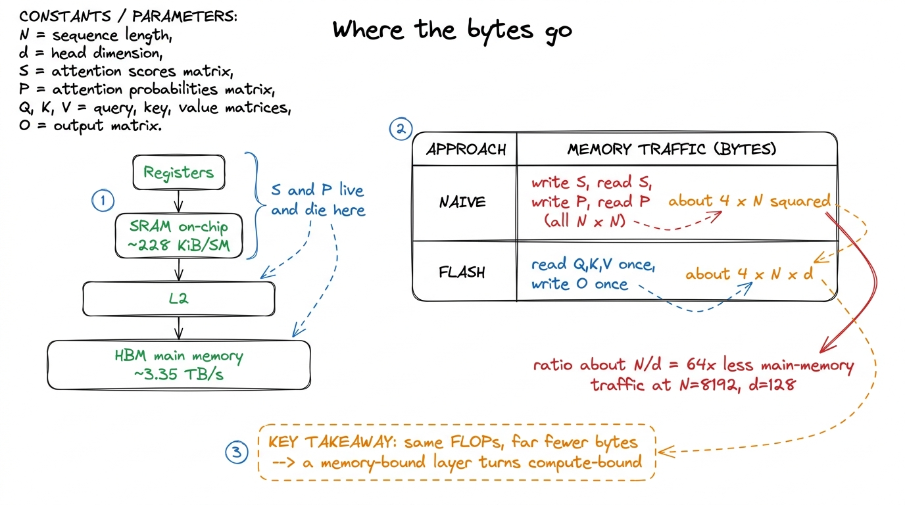

Teaching FlashAttention: never write the scores down
By the end of this chapter you'll be able to stand at a whiteboard and teach the single most famous kernel in modern AI — FlashAttention — as one clean idea a student can hold in their head: never write the big scores matrix down. No CUDA required. You need one honest picture of why attention wastes memory, one very good "grading papers" metaphor for streaming, and the courage to do a tiny running-max by hand. Let's build it so it's yours.
First, what is attention doing? (the two-minute recap)
You don't need to re-teach the whole transformer here — the earlier chapters did that. You only need the shape of one attention head. Say it plainly. Attention takes three grids of numbers, all the same size: Q (the questions), K (the keys), and V (the values). Each is N × d — N rows, one per word in the sentence, and d columns (the "head dimension," usually 64 or 128).
The math is three steps:
S = Q @ K.T # (N, N) every word scores every other word
P = softmax(S, dim=-1) # (N, N) turn scores into weights that sum to 1
O = P @ V # (N, d) each word = a weighted blend of the valuesThe thing to burn into the room is the size of that middle grid, S. It is N × N. For a sequence of 8,192 words, that is 67 million numbers — 256 MiB — for a single head in a single layer. And a model has dozens of heads and dozens of layers.
Why naive attention is a memory disaster
Now the part students always get wrong, so you must get it right. Everyone assumes the two matrix multiplies are the expensive part. They are not. The expensive part is the little softmax in the middle — not because it does much math, but because of where it forces the data to travel.
Walk through the trips the naive version makes:
- Compute
S(N × N) and write all of it out to the GPU's main memory (HBM). - Read all of S back to find each row's max and sum, so softmax can normalize it.
- Write P (
N × N) back out. - Read P back a third time to multiply by V.
This connects straight to the course's spine (the "feeding the cooks" chapter): the score matrix is a memory-bound intermediate. FlashAttention's entire pitch is one word — fusion — glue the two matmuls and the softmax into a single kernel so that S is computed, used, and thrown away without ever touching main memory.

figure rendering · Naive attention as a truck making four pointless warehouse trips with
figure rendering · Naive attention makes four trips over an N-by-N matrix. FlashAttentionThe obstacle: softmax wants to see the whole row
Here is why nobody had just done this obvious fusion for years, and it's worth pausing on because it's the intellectual heart of the chapter.
Softmax is global. To normalize one row of scores you need two things that depend on every number in that row: the row's maximum (you subtract it before exponentiating, so the numbers don't overflow) and the row's sum of exponentials (the denominator). You cannot divide by a total you haven't finished adding up. You cannot subtract a max you haven't finished searching for.
So streaming seems impossible. If you only look at one tile of the row at a time, you don't yet know the max or the sum for the whole row.
The metaphor: grading a stack of exam papers
This is the metaphor to draw and act out. It makes online softmax feel obvious.
Imagine you're grading a huge stack of exams and you want two things at the end: the highest score in the stack, and a running tally that lets you compute everyone's grade relative to that highest score. But the stack is too tall to lay out on your desk at once. So you grade one small pile at a time.
You keep three sticky notes on your desk:
- m — the highest score you've seen so far.
- ℓ — a running total (of scores measured relative to that highest-so-far).
- O — a running blended answer you're building up.
You grade a pile. If the top score in this new pile is higher than your old m, then your old running total was measured against a max that was too low — every number in it is now a little too big. So you rescale: shrink the old total by exactly the right factor, then add in the new pile. Update your sticky note m to the new high. Move to the next pile.
At the very end — and only at the end — you divide by the final total to get everyone's proper grade.

figure rendering · The core trick as a human task: you never lay out the whole stack; youDo it by hand: a tiny running softmax
Numbers make it real. Do this slowly on the board. Take one row of scores — just four numbers — and pretend they arrive in two piles of two.
Row of scores: [1, 3, 2, 5]. Piles: [1, 3] then [2, 5].
Pile 1 = [1, 3].
- New max
m = 3. - Exponentials relative to the max:
exp(1-3)=0.135,exp(3-3)=1. - Running sum
ℓ = 0.135 + 1 = 1.135.
Pile 2 = [2, 5]. The top of this pile is 5 — bigger than our old max of 3!
- New max
m_new = 5. - Shrink factor
α = exp(m_old − m_new) = exp(3 − 5) = exp(−2) = 0.135. - Rescale the old sum:
0.135 × 1.135 = 0.153. - New pile's exponentials:
exp(2-5)=0.050,exp(5-5)=1. - Running sum
ℓ = 0.153 + 0.050 + 1 = 1.203.
Now check it against the honest, all-at-once answer. The true denominator is exp(1-5)+exp(3-5)+exp(2-5)+exp(5-5) = 0.018 + 0.135 + 0.050 + 1 = 1.203. Identical. Not an approximation — exactly the same number, computed without ever holding all four scores at once.
ℓ = 1.203 and the all-at-once ℓ = 1.203. Circle them. Say: "Same answer. We never had the whole row on the desk, and softmax came out exact. That is online softmax — and it's the entire reason we can throw the big grid away." This is the jaw-drop moment; let it land before moving on.
figure rendering · The by-hand proof: streaming the softmax in two piles gives the exactThe real recurrence, built from the sticky notes
Now generalize the by-hand example into the actual loop. One block of the GPU owns one block of query rows (Q_i, say 64 of them) and keeps its three sticky notes on-chip the whole time. It walks across the key/value blocks one at a time. Here is the whole kernel, in plain form:
# One block owns query rows Q_i (B_r x d), resident on-chip.
m = -inf # running max (sticky note 1)
l = 0 # running sum (sticky note 2)
O = 0 # running blend (sticky note 3), shape (B_r, d)
for j in range(num_k_blocks): # stream the key/value blocks
K_j, V_j = load(K, j), load(V, j) # small tiles -> on-chip
S = Q_i @ K_j.T # (B_r, B_c) scores, stays on-chip
m_new = maximum(m, rowmax(S)) # did this tile raise the max?
P = exp(S - m_new) # exponentials vs the new max
alpha = exp(m - m_new) # the shrink factor
l = alpha * l + rowsum(P) # shrink old sum, add new
O = alpha * O + P @ V_j # shrink old blend, add new
m = m_new
O = O / l # divide ONCE, at the very end
store(O_i, O) # write O (N x d) -- the only write!Point at each line and match it to a sticky note. The S tile is small (B_r × B_c, say 64×64), lives on-chip, and is consumed instantly — it is never written to main memory. The alpha line is the "shrink the past to match the present" move — the only line that would look strange to someone who's only written a normal softmax. And the division by ℓ happens exactly once, at the end, because only then do we know the true total.

figure rendering · The recurrence in three panels: scores are tiled, each new key block mWhat we actually bought
Be honest with students about what the win is and isn't. FlashAttention does the same matrix math as naive attention — in fact a few extra multiplies for the rescales. It does not save FLOPs. The entire win is in memory traffic.
Naive attention moves the N × N matrix across main memory four times: traffic grows like N². FlashAttention moves only Q, K, V, and O — each N × d — once: traffic grows like N × d. The ratio is roughly N / d. At N = 8192 and d = 128, that is about 64× less traffic across the slowest road on the chip.

figure rendering · The ledger: traffic drops from roughly 4N-squared to 4Nd, dozens of ti1 The multiplier depends heavily on N. At short sequence lengths the N² term is small and fusion barely helps; the gain grows with context length. That's exactly why FlashAttention arrived the same moment models started chasing long context — the two needs met.
FlashAttention-2, in one breath
You don't need to teach FA2 in depth to a first-time audience, but you should be able to say what it added, because someone will ask. FA1 answered where the bytes live. FA2 answered how the work is split up — and it roughly doubled the speed again, taking the forward pass from around 35% of peak to about 70%.
The one-liner for each of its three moves:
- Do the slow softmax work less often. The
expand rescale run on the GPU's slow math units (~16× slower per operation than the tensor cores). FA2 keeps the output un-normalized and divides byℓjust once at the end instead of every inner step. Fewer slow instructions blocking the fast matmuls. - Parallelize over sequence length. FA1 gave one block to each (batch, head) pair. With
batch=1long-context inference — 32 heads on a 132-SM machine — three-quarters of the GPU sits idle. FA2 hands each query block its own SM, filling the machine. - Skip the masked upper triangle. In causal attention each word only looks backward, so half the score grid is thrown away anyway. FA2, with tiles as explicit loop indices, simply never computes it — roughly 2× less matmul work for free.
Teaching notes: the board plan
Here's the order that works. Don't deviate — each step sets up the next.
scaled_dot_product_attention picks the fused kernel automatically) on a long sequence, and print peak GPU memory for each. Naive will allocate the giant N × N buffer; fused won't. Watch the peak-memory number drop by orders of magnitude while the outputs match to floating-point noise. Same answer, a fraction of the memory — that's the whole chapter in one cell.You can now teach
- Why naive attention is a memory disaster — the
N × Nscore grid written and re-read four times, quadratic inN, while the softmax does almost no real math. - The obstacle — softmax needs the whole row (its max and its sum) — and why that makes fusion look impossible.
- Online softmax as grading exams pile by pile — three sticky notes (running max, running sum, running blend) and the one clever "shrink the past to match the present" rescale.
- The by-hand proof — a four-number, two-pile softmax that comes out exactly equal to the all-at-once answer without ever holding the whole row.
- What was actually bought — same FLOPs, roughly
N/d(~64×) less main-memory traffic, flipping a memory-bound layer into a compute-bound one. - The production stakes and FA2 in one breath — where FlashAttention runs today, and the three FA2 moves (defer the divide, parallelize over sequence length, skip the causal upper triangle).